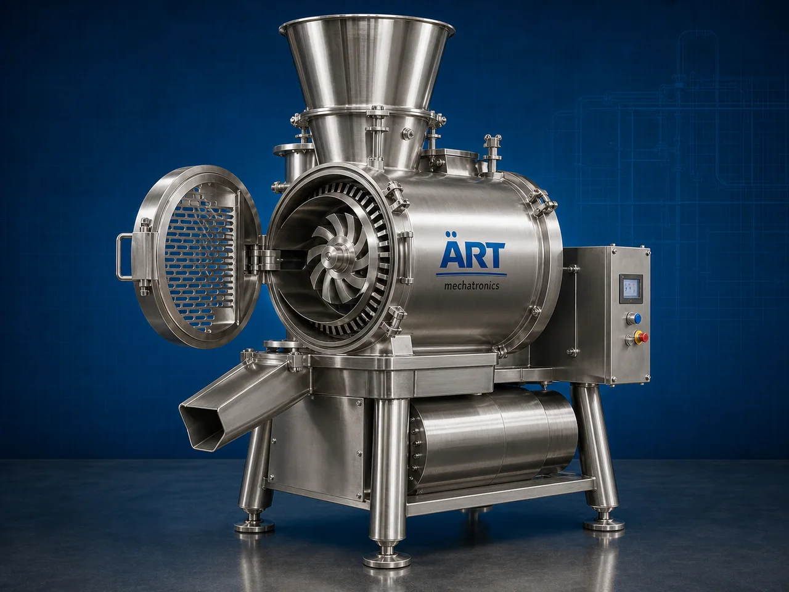

Industrial Slicer Machine (Automatic Food & Material Slicing System)
An Industrial Slicer Machine, also known as a Food Slicing Machine, Automatic Slicer, Industrial Cutting & Slicing Machine, or Precision Slicing System, is an advanced industrial processing solution designed for precision slicing, cutting, strip cutting, wafer cutting, thickness-controlled…

About the Industrial Slicer Machine
Industrial slicer systems are widely used for: ✔ Vegetable slicing operations ✔ Potato chip slicing ✔ Fruit slicing and cutting ✔ Bread and bakery slicing ✔ Paneer and cheese slicing ✔ Snack ingredient preparation ✔ Frozen food processing ✔ Industrial material slicing operations
The machine improves: ✔ Slice uniformity ✔ Production efficiency ✔ Product consistency ✔ Processing speed ✔ Labor reduction ✔ Hygiene standards ✔ Industrial food quality
Industrial slicer machines use: ✔ Precision stainless steel slicing blades ✔ Servo synchronized cutting systems ✔ PLC and HMI automation controls ✔ Adjustable thickness control systems ✔ Conveyor synchronized feeding mechanisms
to automatically slice products with superior accuracy and high production efficiency.
Industrial slicer machines are widely used in industries such as:
Food processing industries Snack manufacturing industries Frozen food industries Bakery industries Dairy industries Fruit and vegetable processing industries Ready-to-eat food industries Commercial kitchen industries
where uniform slicing, hygienic processing, and continuous high-speed production are essential.
The machine is highly suitable for: ✔ Potato and vegetable slicing ✔ Bread and bakery slicing ✔ Paneer and cheese cutting ✔ Fruit slicing operations ✔ Frozen food preparation ✔ Industrial food processing automation systems
ART Mechatronics offers high-performance industrial slicer machines, engineered for continuous industrial operation, hygienic food processing, precision slicing performance, and reliable long-term industrial productivity.
Working Principle of Industrial Slicer Machine
- 1. Product Feeding & Conveyor Handling Products are automatically transferred through synchronized feeding systems for slicing operation.
- 2. Product Alignment & Thickness Control Process Machine automatically aligns products and adjusts slicing thickness before cutting operation.
Servo synchronization ensures smooth product movement and accurate slicing operations.
- 3. Slicing Operation Machine handles slicing of: ✔ Potatoes ✔ Vegetables ✔ Fruits ✔ Bread ✔ Paneer ✔ Cheese ✔ Frozen foods ✔ Industrial food products
accurately and continuously.
- 4. Precision Slicing & Portioning Process Machine performs: Thin slicing Wafer slicing Strip cutting Portion slicing Thickness-controlled slicing Continuous cutting
for efficient industrial food processing operations.
- 5. Intelligent Automation & Hygiene Integration Optional systems include: Automatic feeding systems Washdown compatible design Safety guarding systems Variable speed controls Food-grade conveyor systems
- 6. Finished Product Discharge Processed products discharged automatically for: Packaging operations Frying processes Cooking systems Freezing operations Warehouse storage
Types of Industrial Slicer Machines
- 1. Vegetable Slicer Machine Designed for: ✔ Vegetable slicing and processing applications
- 2. Potato Wafer Slicer Machine Suitable for: ✔ Chips and snack manufacturing systems
- 3. Bread & Bakery Slicer Machine Uses: ✔ Bakery product slicing operations
- 4. Paneer & Cheese Slicer Machine Designed for: ✔ Dairy and food ingredient processing systems
- 5. Servo Driven Slicer Machine Suitable for: ✔ Precision high-speed slicing operations
- 6. Fully Automatic Industrial Slicing System Designed for: ✔ Complete industrial food processing automation lines
Industries Using Industrial Slicer Machines
🍟 Snack Manufacturing Industry Potato chips, wafers, namkeen, and snack ingredient slicing systems. 🍅 Food Processing Industry Vegetables, fruits, frozen foods, and industrial food slicing systems. 🥖 Bakery Industry Bread slicing, bakery processing, and food preparation systems. 🧀 Dairy Industry Paneer, cheese, tofu, and dairy ingredient slicing systems. ❄️ Frozen Food Industry Frozen vegetables, ready-to-cook foods, and food preparation operations. 🛒 FMCG Food Industry Packaged food ingredients and industrial food processing systems.
Features & Advantages
✔ High-speed automatic slicing operation ✔ Accurate and uniform product slicing systems ✔ Hygienic stainless steel food-grade construction ✔ PLC and servo automation control systems ✔ Improves production efficiency and product consistency ✔ Reduces manual slicing dependency ✔ Supports multiple food products and slice thicknesses ✔ Reliable long-term industrial performance ✔ Smooth integration with food processing automation lines
Technical Highlights
Machine Type: Industrial slicer machine Food slicing system Automatic slicing machine Product Compatibility: Vegetables Fruits Potatoes Bread Paneer Cheese Industrial food products Integration: Servo slicing systems Food-grade conveyor systems Automatic feeding systems Washdown compatible systems Features: PLC control system Touchscreen HMI Stainless steel construction Variable thickness control Precision slicing blade systems Applications: Vegetable slicing Potato chip cutting Food portioning Bakery slicing Industrial food processing Automation: Semi-automatic Fully automatic industrial systems
Turnkey Slicing Solutions
ART Mechatronics offers: Complete industrial slicing systems Automatic food slicing solutions Industrial food processing automation systems Food conveyor integration systems Installation & commissioning After-sales service & AMC
Why Choose Art Mechatronics
Expertise in industrial food processing and automation systems Customized slicing solutions for multiple food industries High-performance and hygienic food processing technology Advanced PLC and servo automation systems Proven industrial food processing performance across sectors
Applications
Snack Manufacturing Plants Food Processing Facilities Bakery Manufacturing Units Frozen Food Industries Dairy Processing Plants Industrial Food Processing Industries
Related Process Equipment machines
Get pricing & specs for the Industrial Slicer Machine
Share the product, target capacity, current process and plant location. These details help our engineers discuss the right machine or line configuration.
One partner, from design to start-up
ART Mechatronics designs, manufactures, installs and commissions your Industrial Slicer Machine solution with regional presence in India, UAE and Thailand.